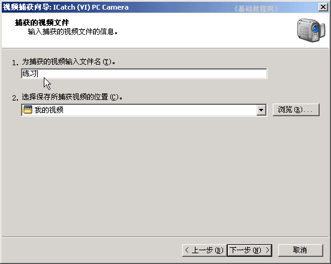
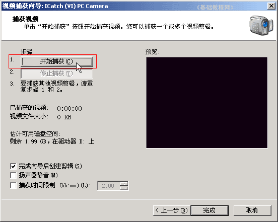

视频编辑 基础入门教程
三、录制视频2 返回目录
在上一课中，我们学习了用自带的录制软件，缺点是生成的文件太大，这一课我们来学习使用Windows Movie Maker录制；
1、启动视频软件
1）点“开始－所有程序－Windows Movie Maker”，启动WinXP自带的视频制作软件；

2）进入后出现一个空白窗口，在左边任务中找到第一个“捕获视频”，下边就是“从视频设备捕获”；
3）点第一个“从视频设备捕获”，出来一个设备面板，点“下一步”继续，如果有多个设备可以在上面选择；
4）接下来出来一个保存面板，把文件名改成“练习”，位置在“我的视频”中，它在“我的文档”中，打开我的文档，里面就有一个“我的视频”文件夹；

5）点“下一步”，这儿是设定录制效果的压缩比率，可以先不设置，用默认的即可，
如果要设置，就点中间的“其他”设置，可以选择一个其他压缩比；
6）点下一步，出来一个准备面板，点上边的“开始捕获”，就可以录制了，到时间后点下边的“停止捕获”；

7）录制好了以后，点下边的“完成”按钮，结束录制，返回后窗口中央，出来许多视频片段，这就是刚才录制的，
上面有文字提示：“拖动到下面的情节提要”；
8）把中间的这个“练习”剪辑，拖到下边的时间线上的第一个格子里；
2、保存视频文件
1）在左边找到“完成电影”点一下展开，选择第一个“保存到我的计算机”；
2）在出来的保存面板中，把文件名改成“电影练习”，位置不变，点“下一步”继续；
3）然后出来一个压缩选项，这儿不改动、用默认的“最佳质量”，512Kbps、640×480大小的文件；
4）点“下一步”开始保存电影，出现进度条，下面还有保存的位置；
5）完成后，可以播放一下视频文件，也可以去掉勾，点“完成”即可，视频文件已经保存到“我的视频”文件夹中了；
6）点菜单“文件－保存”命令，以“练习”为文件名，保存文件到自己的文件夹，这个是捕获视频剪辑的记录文件，留着以后继续编辑用；
本节学习了用Windows Movie Maker录制视频文件的基本方法，如果你成功地完成了练习，请继续学习下一课内容；
本教程由86团学校TeliuTe制作|著作权所有
基础教程网：http://teliute.org/
美丽的校园……
转载和引用本站内容，请保留版权信息和本站链接。